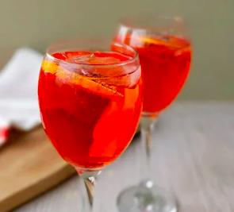

Aperol Spritz
All recipes

Difficulty: Easy
Serves: 2 people
Get a taste of summer with our take on this classic Italian cocktail of Aperol, prosecco and soda. Try our proportions or adjust the ratio to taste.
Ingredients
- Ice
- 100ml Aperol
- 150ml prosecco
- Dash of soda water
Method
- Put a couple of cubes of ice into 2 glasses and add a 50 ml measure of Aperol to each. Divide the prosecco between the glasses and then top up with soda, if you like.